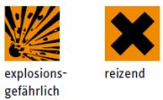

Chemikalienschutzhandschuhe schützen vor Gesundheitsschäden bzw. Verletzungen. Die Wahrscheinlichkeit, dass man sich verletzt oder schädigt, ist nicht gering, denn Chemikalien am Arbeitsplatz gehören in Werkstätten oder Produktionsbetrieben in der heutigen Zeit schon fast zur Normalität. Vielen gefährlichen Stoffen kann man bereits von außen ansehen, wie gefährlich sie sind. So werden z.B. giftige Stoffe mit dem “Totenkopf“ oder ätzende Stoffe mit dem Piktogramm des "Reagenzglases" gekennzeichnet.
| Kennzeichnung | Stoff | Gefährdung |
| Xylol (Aromatischer Kohlenwasserstoff, z.B. in Farben, Lacken) |
Entfettung | |
| Schwefelsäure (anorganische Mineralsäure, z.B. Batteriesäure) Natronlauge (anorganische Base, z.B. in Grundreinigern) |
Verätzung | |
| Lösemittel (z.B. in Bremsenreinigern, Reinigungsmitteln) |
brennbar | |
| Wasserstoffperoxid (Peroxid, z.B. in Reinigungsmitteln, Blondiermitteln) |
Verätzung, Verbrennung |
|
 |
Dibenzoylperoxid (Peroxid, z.B. Startreagenz für Polymerisationen) |
Verbrennung, Reizung |
Tabelle 1: Beispiele für die Kennzeichnung gefährlicher Stoffe
Andererseits kann man bei vielen Arbeitsstoffen die Gefährlichkeit auch nicht sofort erkennen, z.B. wenn sie nicht gekennzeichnet sind, aber bei der Tätigkeit ein Gefahrstoff freigesetzt wird.
Noch schwieriger wird es z.B. in Sanierungsbereichen, in denen nicht immer bekannt ist, mit welchen Gefahrstoffen überhaupt zu rechnen ist.
Da es den universell einsetzbaren Chemikalienschutzhandschuh nicht gibt, muss der Schutzhandschuh zur Gefährdung „passen". Grundlage für die richtige Auswahl von Chemikalienschutzhandschuhen ist die Gefährdungsbeurteilung (siehe Abschnitt 3, Anhang 1).
In jedem Fall muss zuerst versucht werden, die Gefährdung durch einen Ersatzstoff oder ein Ersatzverfahren zu minimieren. Wenn neben den vorrangig durchzuführenden technischen und gegebenenfalls organisatorischen Schutzmaßnahmen persönliche Schutzmaßnahmen die einzige Möglichkeit sind, die Haut zu schützen, müssen geeignete Schutzhandschuhe und gegebenenfalls weitere Persönliche Schutzausrüstungen durch den Unternehmer ausgewählt und zur Verfügung gestellt werden.
| S | Substitution (Ersatzstoff, Ersatzverfahren) |
| T | Technische Schutzmaßnahmen |
| O | Organisatorische Schutzmaßnahmen |
| P | Persönliche Schutzmaßnahmen |